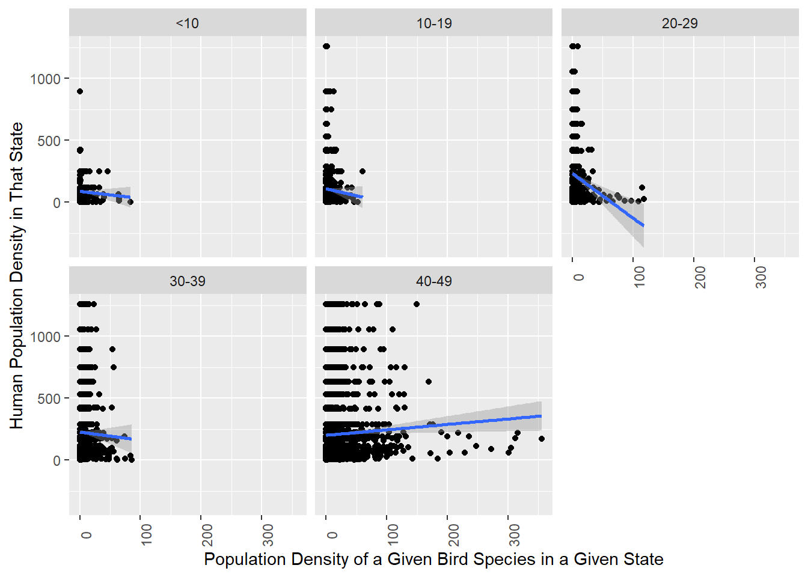

-- Attaching packages --------------------------------------- tidyverse 1.3.2 --
v ggplot2 3.4.1 v purrr 1.0.1
v tibble 3.1.8 v dplyr 1.1.0
v tidyr 1.3.0 v stringr 1.5.0
v readr 2.1.4 v forcats 1.0.0
-- Conflicts ------------------------------------------ tidyverse_conflicts() --
x dplyr::filter() masks stats::filter()
x dplyr::lag() masks stats::lag()
Given that North America has almost 3 billion birds fewer than it did in 1970, with even common species threatened by the decline (Cornell Lab of Ornithology), it is crucially important for the preservation of biodiversity to understand the factors related to this alarming long-term trend. Protecting bird diversity, in addition to benefits for birds themselves, also protects the plants they pollinate, controls the pests they eat, and brings joy to human birdwatchers (Phillipsen). Among the threats birds face is habitat loss due to human land usage. In this study, I specifically investigate the risks posed by built-up urbanized land by addressing the question of how narrowly versus widely distributed species’ population densities relate to human urbanization.
To examine this question, I use a dataset with estimates of the populations of land bird species in the 49 mainland US states. A case is a species-state - a particular bird species as it occurs in a particular US state. Additionally, I aggregated species-state cases into five buckets according to the number of states in which a given species appears, as a metric of how widely distributed different species are (the buckets designate species present in fewer than 10 states, those found in 10-19 states, those found in 20-29 states, those found in 30-39 states, and those found in 40-49 states).
I use this dataset to compute the population densities of the five buckets of bird species by state and compare them with states’ human population densities. Although a finding of an exceptionally inverse correlation with either human population density or urbanized land area among more localized species would not itself prove that urbanized development harms more locally specific bird populations, this study is significant for its potential to shed light on which categories of bird species might benefit from further research to determine if they are being adversely affected by development in urbanized and urbanizing areas.
2. Dataset description
The main dataset comes from Partners in Flight, a set of databases published by the Bird Conservancy of the Rockies for tracking the estimated breeding season populations of various bird species across various geographic regions, and is augmented with other datasets for information about states’ human population densities and the percentage of their land that is urbanized. The specific database I use tracks populations of species across every US state except Hawaii (The dataset also does not include the District of Columbia or US territories. It does include Canadian provinces and territories, though I have kept the focus of my analysis to the United States).
The PIF bird populations dataset was collected by the Bird Conservancy of the Rockies, a nonprofit focused on “conserving birds and their habitats through science, education, and land stewardship.” It includes 7,030 species-state cases (not counting the Canadian species-province cases, which I dropped and did not use). It has been augmented with two smaller datasets providing the human population density of each state and the percentage of each state’s land area that is urban. Its estimates, most recently updated in 2020, are based primarily on the North American Breeding Bird Survey and other ornithological surveys. The dataset offers a main population estimate for each species-state and upper and lower 80% and 95% bounds for each estimate, as well as median and unrounded estimates. My analyses have relied on the main population estimates. Readers interested in more detailed descriptive statistics of the data may refer to the appendix.
The dataset contains 27 variables about each species-state case, of which 12 were cleaned out prior to analysis due to lack of potential relevance. The variables ultimately used in these analyses were each bird’s English Name, its State, and its Population Estimate.
Here, I read in my bird population, state population density, and state urban land area datasets. Then, I drop some irrelevant variables and Canada bird population data, reconfigure the state name variables in the three datasets for mutual compatibility, and merge on the state name variable to combine them into my main dataset.
Additionally, I have replaced NAs in species-state cases with zeroes. There are only 38 species with completely missing Population Estimates (out of 404 in the database), and most of them are either fowl or birds whose populations one would not expect to be large enough to be reliably estimated or to substantially affect the overall analysis (certain birds of prey, endangered species, and predominantly Canadian or Mexican species whose breeding ranges only slightly extend into the United States). There are also some NAs for specific states for species whose breeding ranges extend only very slightly into those states. My results must be understood with the caveat that they are not applicable to fowl or birds of prey. There is no apparent way to fill in the missing data from sources that would be methodologically consistent with and comparable to the PIF database. Though this approach is not without its downsides, since the low-population species that are excluded are potentially some of the most relevant for conservation purposes, it makes sense to replace NAs with zeroes because the populations of birds with missing values are small enough compared to those of more common birds (many of which count millions of individuals in some states) to be effectively zero.
tibble [8,805 x 28] (S3: tbl_df/tbl/data.frame)
$ Sequence AOS 60 : num [1:8805] 83 96 96 96 96 101 101 101 101 101 ...
$ English Name : chr [1:8805] "Plain Chachalaca" "Mountain Quail" "Mountain Quail" "Mountain Quail" ...
$ Scientific Name : chr [1:8805] "Ortalis vetula" "Oreortyx pictus" "Oreortyx pictus" "Oreortyx pictus" ...
$ Introduced : chr [1:8805] NA NA NA NA ...
$ Province / State / Territory : chr [1:8805] "TX" "CA" "OR" "NV" ...
$ Country : chr [1:8805] "USA" "USA" "USA" "USA" ...
$ Population Estimate : num [1:8805] NA 230000 25000 910 170 NA NA NA NA NA ...
$ Lower 95% bound : num [1:8805] NA 150000 13000 490 0 NA NA NA NA NA ...
$ Upper 95% bound : num [1:8805] NA 320000 41000 1600 840 NA NA NA NA NA ...
$ Data Source : chr [1:8805] NA "bbs" "bbs" "bbs,rng" ...
$ Estimated % of Global Population : num [1:8805] NA 0.877845 0.095676 0.003541 0.000646 ...
$ Estimated % of USA/Canada Population: num [1:8805] NA 0.897861 0.097857 0.003622 0.000661 ...
$ Median Estimate : num [1:8805] NA 220000 23000 860 67 NA NA NA NA NA ...
$ Lower 80% bound : num [1:8805] NA 170000 16000 590 0 NA NA NA NA NA ...
$ Upper 80% bound : num [1:8805] NA 290000 35000 1300 470 NA NA NA NA NA ...
$ BBS Average (birds/rte) : num [1:8805] 0.00489 2.22934 0.39827 0.01288 0.00382 ...
$ BBS Routes : num [1:8805] 204 191 99 30 85 204 61 53 70 46 ...
$ Species Routes : num [1:8805] 1 104 30 0 1 163 60 53 68 36 ...
$ Area of Region (km2) : num [1:8805] 687020 410207 250255 286367 176218 ...
$ Detection Distance Category (m) : num [1:8805] 300 300 300 300 300 200 200 200 200 200 ...
$ Pair Adjust Category : num [1:8805] 2 2 2 2 2 1.75 1.75 1.75 1.75 1.75 ...
$ Time Adjust Mean : num [1:8805] 1.65 1.5 1.5 1.5 1.5 ...
$ Time Adjust SD : num [1:8805] 0.2246 0.0217 0.0217 0.0217 0.0217 ...
$ Population Estimate (unrounded) : num [1:8805] NA 225206 24545 908 166 ...
$ Lower 80% bound (unrounded) : num [1:8805] NA 171416 16058 589 0 ...
$ Upper 80% bound (unrounded) : num [1:8805] NA 286830 34774 1296 465 ...
$ Lower 95% bound (unrounded) : num [1:8805] NA 150115 13038 487 0 ...
$ Upper 95% bound (unrounded) : num [1:8805] NA 322391 40930 1586 843 ...
#renaming State variable for compatibility with the state population density dataset birds <-rename(birds, "State"="Province / State / Territory")#dropping if the country is Canada, then removing the country variablebirds <-select(birds, -c(`Sequence AOS 60`, `Data Source`, `Pair Adjust Category`, `Introduced`, `Estimated % of Global Population`, `Estimated % of USA/Canada Population`, `BBS Average (birds/rte)`, `BBS Routes`, `Species Routes`, `Detection Distance Category (m)`, `Pair Adjust Category`, `Time Adjust Mean`, `Time Adjust SD`))birds <-subset(birds, Country !="CAN")birds <-select(birds, -c(Country))states <-read_csv("MattEckstein_FinalProjectData/State_statistics.csv")#dropping variables that are unlikely to be useful for analysis, for the sake of neatnessstates <-select(states, -c(pop2022, pop2020, pop2019, pop2010, growthRate, growth, growthSince2010, fips))#combining datasets into one, giving the state variable in each the same name ("State") and structure (abbreviations rather than full names) and merging on the basis of itlibrary(states)states$state <- state.abb[match(states$state,state.name)]urbanland <-read_csv("MattEckstein_FinalProjectData/State_urbanized_land.csv")urbanland <- urbanland %>%filter(!row_number() %in%c(1))urbanland <-select(urbanland, -c(`Urban Population`, `Urban Land Area (Square Miles)`, `Urban Density (Square Miles)`, `Urban Density (Square KM)`, `Urban Density Rank`, `Urban Popu-...7`, `Urban Popu-...8`, `Urban Land % Rank`))urbanland <-rename(urbanland, "State"="State/District")urbanland$State <- state.abb[match(urbanland$State,state.name)]states <-rename(states, "State"="state")alldata <-merge(birds, states, by ="State")alldata <-merge(alldata, urbanland, by ="State")alldata <-mutate_all(alldata, ~replace_na(.,0))alldata <- alldata %>%mutate(birddens =`Population Estimate`/`TotalArea`)
3. Analysis Plan
In these analyses, I will examine the population densities (birddens) of bird species (English Name) in the 49 mainland states in relation to human urbanization, measured both by human population density (densityMi) and by the percentage of states’ land that is urbanized (pcturbanland). Specifically, I will answer the questions of the overall correlations of bird species’ population densities with these two metrics of urbanization, to gain an understanding of the overall relationship between the spatial distributions of human and bird populations. Additionally, I will ask how this relationship varies among narrowly and widely distributed bird species by repeating the same analyses broken down by the buckets (species_group2) I created earlier of species according to the number of states they appear in.
4. Results
Here, I create buckets to group species by the number of states they inhabit - one for narrowly distributed species that breed in fewer than 10 states; one for species that breed in 10-19 states, one for species found in 20-29 states, one for those in 30-39 states, and one for the most widespread species found in 40 or more states:
alldata<-alldata %>%group_by(`English Name`) %>%mutate(n_State =n_distinct(State))%>%#creating a variable designating the number of distinct states a species appears inungroup()
Looking at the results of this, it becomes apparent that species present in 40 or more states are much more densely populated than those whose distributions are narrower.
ggplot(alldata, aes(x=species_group2, y=species_group_density)) +theme_classic(base_size =20) +geom_bar(position=position_dodge(), stat="identity") +xlab("Number of States Species Inhabits") +ylab("Species Group Density")
Here, we can see states’ human population densities on the horizontal axis and the densities of their bird species on the Y axis. This graph does not portray any strong trends; the correlation line indicates a very slightly positive correlation.
ggplot(alldata, aes(x=densityMi, y=birddens)) +theme_classic(base_size =20) +geom_jitter() +xlab("State Human Population Density") +ylab("Bird Species' Pop. Densities") +stat_smooth(method ="lm",formula = y ~ x,geom ="smooth")
Here, I make one final tweak to the urban land variable, converting it to numeric form in order to be able to make graphs on the basis of it:
class(alldata$`Urban Land/ Total Land`)
[1] "character"
alldata$pcturbanland <-as.numeric(sub("%","",alldata$`Urban Land/ Total Land`))
Graphing bird population densities against humanity again, this time using the percentage of urbanized land instead of human population density. The results look pretty similar:
This similarity inspired me to check the correlation between my two metrics of human urbanization: the percentage of urban land in a state and its population density. They turn out to be much more highly correlated than I would have expected - r =.971655. (Since the nature of urban areas can vary quite widely, I would have intuitively expected something more along the lines of r=.8 or so.) This suggests that my other graphs will also not be radically affected by which metric of human density I use.
cor.test(alldata$pcturbanland, alldata$densityMi)
Pearson's product-moment correlation
data: alldata$pcturbanland and alldata$densityMi
t = 344.57, df = 7028, p-value < 2.2e-16
alternative hypothesis: true correlation is not equal to 0
95 percent confidence interval:
0.9703182 0.9729324
sample estimates:
cor
0.971655
Determining the correlation between individual bird species’ population densities in a state and the state’s human population density: This turns out to be a slight but significantly positive correlation of .04244767 (p = 0.0003709). Thus, at the individual species level, bird population density is slightly positively associated with human population density.
cor.test(alldata$densityMi, alldata$birddens)
Pearson's product-moment correlation
data: alldata$densityMi and alldata$birddens
t = 3.5617, df = 7028, p-value = 0.0003709
alternative hypothesis: true correlation is not equal to 0
95 percent confidence interval:
0.01908987 0.06575916
sample estimates:
cor
0.04244767
Repeating the same procedure correlating bird species’ population densities with states’ percentages of urban land rather than their human population densities results in a slightly stronger but quite similar correlation of 0.04771932 (p = 6.265 * 10^-5.)
cor.test(alldata$pcturbanland, alldata$birddens)
Pearson's product-moment correlation
data: alldata$pcturbanland and alldata$birddens
t = 4.005, df = 7028, p-value = 6.265e-05
alternative hypothesis: true correlation is not equal to 0
95 percent confidence interval:
0.02436977 0.07101685
sample estimates:
cor
0.04771932
Calculating the correlation, bucketed by the number of states species appear in, between species population density and human population density: Note that, though the overall correlation between bird species population density and human population density is slightly positive, it is actually negative for every bucket except among those species present in 40 or more states. This is particularly true among species with small and mid-sized ranges encompassing 20 to 29 states:
Here, I check the statistical significance of these correlations. The positive correlation between species population density and human population is statistically significant (p<.05) among species found in 40 or more states, as is the negative correlation among species found in 20-29 states:
However, this relationship, using urban land, is weakly significant (p<.1) among birds present in 10 or fewer states, in addition to the significance (p<.05) in the 20-29 and 40-49 state buckets that was present when using human population density:
Here, I represent the relationship between species’ population densities in states and the density of human population in the same states, broken down by the number of states species inhabit - it is slightly negative among species inhabiting fewer than 10, 10-19, or 30-39 states, more prominently negative among species inhabiting 20-29 states, and slightly positive among those in 40 or more states:
#Graphing the above relationshipggplot(cor_densityMi_birddens_by_group, aes(x=species_group2, y=cor)) +theme_classic(base_size =20) +geom_point() +xlab("Number of States Species Inhabits") +ylab("Correlation - States' Bird Species and Human Population Densities")+theme(axis.title =element_text(size =8))
This relationship looks quite similar when measuring human urbanization in terms of urbanized land rather than population density:
ggplot(cor_pcturbanland_birddens_by_group, aes(x=species_group2, y=cor)) +theme_classic(base_size =20) +geom_point() +xlab("Number of States Species Inhabits") +ylab("Correlation - States' Bird Species and Percentages Urbanized Land") +theme(axis.title =element_text(size =8))
Here are the relationships between the population densities by state of bird species and the same states’ human population densities, broken down by the number of states the species appear in. As alluded to earlier, it becomes apparent that, despite the fact that this relationship is positive overall, it is negative in every individual bucket except that for widespread species found in 40 or more states:
ggplot(alldata, aes(x=birddens, y = densityMi)) +geom_point() +facet_wrap(~`species_group2`) +theme(axis.text.x =element_text(angle=90)) +xlab("Population Density of a Given Bird Species in a Given State") +ylab("Human Population Density in That State") +stat_smooth(method ="lm",formula = y ~ x,geom ="smooth")

This relationship, like most others, looks quite similar when using urbanized land instead of human population density:
ggplot(alldata, aes(x=birddens, y = pcturbanland)) +geom_point() +facet_wrap(~`species_group2`) +theme(axis.text.x =element_text(angle=90)) +xlab("Population Density of a Given Bird Species in a Given State") +ylab("Percentage of Urban Land in That State") +stat_smooth(method ="lm",formula = y ~ x,geom ="smooth")
5. Conclusion and Discussion
Overall, this analysis has provided evidence that, while land bird species in the 49 mainland United States, excluding fowl and birds of prey, have state-by-state population densities slightly positively correlated with the distribution of humanity, this effect is driven by the most widespread species present in at least 40 states. Among more localized bird species occurring in fewer than 40 states, population density is negatively correlated with human population density. Additionally, species’ population densities are also negatively correlated with the percentage of states’ land that is urbanized among species occurring in fewer than 40 states. These correlations are especially negative and highly statistically significant among species occurring in 20 to 29 states, pointing to a potential need for further research to determine if expansion of built-up human environments is proving exceptionally harmful to species with mid-sized ranges.
This suggests that more locally distributed bird species may be experiencing greater harm from the habitat changes associated with urbanization. As a mere correlational analysis, and one focused on a single point in time at that, it is insufficient to prove causality, though it points to a subset of bird species (i.e. those with small and medium-sized ranges) to examine in further research to identify possible causality. Further analyses of the disparate impacts of urbanization on widespread versus more localized bird species could focus on time-series analysis of changes in human vs. species population density and on isolating the impact of urbanization relative to other factors, such as climate change, non-urban land use changes such as those related to agriculture and forestry, and the changing ranges of competitor and predator species.
An additional limitation of these analyses is the absence of species with no population estimates in the Partners in Flight dataset. Some of these species occur primarily in Canada or Mexico and inhabit only very small sections of the United States. These few species would have been relatively unlikely to impact the overall analysis*; furthermore, their conservation statuses are more likely to be impacted by developments in Canada or Mexico than those in the United States. Other species with missing population estimates are fowl or birds of prey, and the findings of this report should not be taken to apply to birds in those categories. However, a handful of uncommon species outside these categories, such as the red-cockaded woodpecker, occur primarily or exclusively in the United States, yet have no available population estimates. Such species’ populations are treated as zero in these analyses, and they effectively are zero by comparison with the more abundant species in this report due to being several orders of magnitude smaller. However, this limitation is worth noting because uncommon species are often of greatest immediate concern in conservation efforts. As such, the findings of these analyses are most applicable for identifying areas of potential concern for longer-term monitoring rather than addressing the most immediate threats.
*Including these species, if done, could even have been somewhat misleading, since these “localized” species’ ranges are in fact much broader than their presence in only small portions of the United States would have implied.
Appendix. Descriptive Statistics
The combined dataset has 7,030 observations of 25 variables.
Among the 7,030 species-state population estimates, the mean population is 574,478, with a standard deviation of 1,999,939. The minimum is zero individuals, the 25th percentile is 7,500 individuals, the 75th percentile is 420,000, and the maximum is 57,000,000 - suggesting variation of several orders of magnitude among different species-state cases.
Among the 50 US states, the mean population density is 207 people per square mile, with a standard deviation of 274. States population densities range from 1.3 people per square mile (Alaska) to 1,259 people per square mile (New Jersey). The 25th and 75th percentiles are 48 and 223 people per square mile.
Relatedly, the mean state’s land is 7.4 percent urban, with states’ percentages of urban land ranging from 0 (Alaska) to 39 (New Jersey). The standard deviation is 10, and the 25th and 75th percentiles of percentage of urban land are 1.3% and 7.7%.
Cox, Wendell. “America’s Most Urban States.” March 7, 2016. New Geography. https://www.newgeography.com/content/005187-america-s-most-urban-states (Cox himself cites the US Census Bureau)
Partners in Flight. 2020. Population Estimates Database, version 3.1. Available at http://pif.birdconservancy.org/PopEstimates. Accessed on April 9, 2023.
Phillipsen, Ivan. “Bird Biodiversity.” 2020. Science of Birds. Accessed May 22, 2023. https://www.scienceofbirds.com/blog/bird-biodiversity.
R Core Team (2021). R: A language and environment for statistical computing. R Foundation for Statistical Computing, Vienna, Austria. URL https://www.R-project.org/.
“United States by Density 2020.” n.d. Worldpopulationreview.com. https://worldpopulationreview.com/state-rankings/state-densities.
Source Code
---title: "Final Project: Matt Eckstein"author: "Matt Eckstein"description: "Relationship of Land Bird Population Density to Human Population Density Across US States among Narrowly and Widely Distributed Species"date: "05-22-2023"format: html: df-print: paged toc: true code-copy: true code-tools: true css: styles.csscategories: - final_Project - Matt Ecksteineditor_options: chunk_output_type: console---```{r}#| label: setup#| warning: false#| message: falselibrary(tidyverse)knitr::opts_chunk$set(echo =TRUE, warning=FALSE, message=FALSE)```## 1. IntroductionGiven that North America has almost 3 billion birds fewer than it did in 1970, with even common species threatened by the decline (Cornell Lab of Ornithology), it is crucially important for the preservation of biodiversity to understand the factors related to this alarming long-term trend. Protecting bird diversity, in addition to benefits for birds themselves, also protects the plants they pollinate, controls the pests they eat, and brings joy to human birdwatchers (Phillipsen). Among the threats birds face is habitat loss due to human land usage. In this study, I specifically investigate the risks posed by built-up urbanized land by addressing the question of how narrowly versus widely distributed species' population densities relate to human urbanization.To examine this question, I use a dataset with estimates of the populations of land bird species in the 49 mainland US states. A case is a species-state - a particular bird species as it occurs in a particular US state. Additionally, I aggregated species-state cases into five buckets according to the number of states in which a given species appears, as a metric of how widely distributed different species are (the buckets designate species present in fewer than 10 states, those found in 10-19 states, those found in 20-29 states, those found in 30-39 states, and those found in 40-49 states).I use this dataset to compute the population densities of the five buckets of bird species by state and compare them with states' human population densities. Although a finding of an exceptionally inverse correlation with either human population density or urbanized land area among more localized species would not itself prove that urbanized development harms more locally specific bird populations, this study is significant for its potential to shed light on which categories of bird species might benefit from further research to determine if they are being adversely affected by development in urbanized and urbanizing areas.## 2. Dataset descriptionThe main dataset comes from Partners in Flight, a set of databases published by the Bird Conservancy of the Rockies for tracking the estimated breeding season populations of various bird species across various geographic regions, and is augmented with other datasets for information about states' human population densities and the percentage of their land that is urbanized. The specific database I use tracks populations of species across every US state except Hawaii (The dataset also does not include the District of Columbia or US territories. It does include Canadian provinces and territories, though I have kept the focus of my analysis to the United States).The PIF bird populations dataset was collected by the Bird Conservancy of the Rockies, a nonprofit focused on "conserving birds and their habitats through science, education, and land stewardship." It includes 7,030 species-state cases (not counting the Canadian species-province cases, which I dropped and did not use). It has been augmented with two smaller datasets providing the human population density of each state and the percentage of each state's land area that is urban. Its estimates, most recently updated in 2020, are based primarily on the North American Breeding Bird Survey and other ornithological surveys. The dataset offers a main population estimate for each species-state and upper and lower 80% and 95% bounds for each estimate, as well as median and unrounded estimates. My analyses have relied on the main population estimates. Readers interested in more detailed descriptive statistics of the data may refer to the appendix.The dataset contains 27 variables about each species-state case, of which 12 were cleaned out prior to analysis due to lack of potential relevance. The variables ultimately used in these analyses were each bird's English Name, its State, and its Population Estimate.Here, I read in my bird population, state population density, and state urban land area datasets. Then, I drop some irrelevant variables and Canada bird population data, reconfigure the state name variables in the three datasets for mutual compatibility, and merge on the state name variable to combine them into my main dataset.Additionally, I have replaced NAs in species-state cases with zeroes. There are only 38 species with completely missing Population Estimates (out of 404 in the database), and most of them are either fowl or birds whose populations one would not expect to be large enough to be reliably estimated or to substantially affect the overall analysis (certain birds of prey, endangered species, and predominantly Canadian or Mexican species whose breeding ranges only slightly extend into the United States). There are also some NAs for specific states for species whose breeding ranges extend only very slightly into those states. My results must be understood with the caveat that they are not applicable to fowl or birds of prey. There is no apparent way to fill in the missing data from sources that would be methodologically consistent with and comparable to the PIF database. Though this approach is not without its downsides, since the low-population species that are excluded are potentially some of the most relevant for conservation purposes, it makes sense to replace NAs with zeroes because the populations of birds with missing values are small enough compared to those of more common birds (many of which count millions of individuals in some states) to be effectively zero.```{r}library(readxl)birds <-read_xlsx("MattEckstein_FinalProjectData/PopEsts_ProvState_2021.02.05.xlsx")str(birds)#renaming State variable for compatibility with the state population density dataset birds <-rename(birds, "State"="Province / State / Territory")#dropping if the country is Canada, then removing the country variablebirds <-select(birds, -c(`Sequence AOS 60`, `Data Source`, `Pair Adjust Category`, `Introduced`, `Estimated % of Global Population`, `Estimated % of USA/Canada Population`, `BBS Average (birds/rte)`, `BBS Routes`, `Species Routes`, `Detection Distance Category (m)`, `Pair Adjust Category`, `Time Adjust Mean`, `Time Adjust SD`))birds <-subset(birds, Country !="CAN")birds <-select(birds, -c(Country))states <-read_csv("MattEckstein_FinalProjectData/State_statistics.csv")#dropping variables that are unlikely to be useful for analysis, for the sake of neatnessstates <-select(states, -c(pop2022, pop2020, pop2019, pop2010, growthRate, growth, growthSince2010, fips))#combining datasets into one, giving the state variable in each the same name ("State") and structure (abbreviations rather than full names) and merging on the basis of itlibrary(states)states$state <- state.abb[match(states$state,state.name)]urbanland <-read_csv("MattEckstein_FinalProjectData/State_urbanized_land.csv")urbanland <- urbanland %>%filter(!row_number() %in%c(1))urbanland <-select(urbanland, -c(`Urban Population`, `Urban Land Area (Square Miles)`, `Urban Density (Square Miles)`, `Urban Density (Square KM)`, `Urban Density Rank`, `Urban Popu-...7`, `Urban Popu-...8`, `Urban Land % Rank`))urbanland <-rename(urbanland, "State"="State/District")urbanland$State <- state.abb[match(urbanland$State,state.name)]states <-rename(states, "State"="state")alldata <-merge(birds, states, by ="State")alldata <-merge(alldata, urbanland, by ="State")alldata <-mutate_all(alldata, ~replace_na(.,0))alldata <- alldata %>%mutate(birddens =`Population Estimate`/`TotalArea`)```## 3. Analysis PlanIn these analyses, I will examine the population densities (`birddens`) of bird species (`English Name`) in the 49 mainland states in relation to human urbanization, measured both by human population density (`densityMi`) and by the percentage of states' land that is urbanized (`pcturbanland`). Specifically, I will answer the questions of the overall correlations of bird species' population densities with these two metrics of urbanization, to gain an understanding of the overall relationship between the spatial distributions of human and bird populations. Additionally, I will ask how this relationship varies among narrowly and widely distributed bird species by repeating the same analyses broken down by the buckets (`species_group2`) I created earlier of species according to the number of states they appear in.## 4. ResultsHere, I create buckets to group species by the number of states they inhabit - one for narrowly distributed species that breed in fewer than 10 states; one for species that breed in 10-19 states, one for species found in 20-29 states, one for those in 30-39 states, and one for the most widespread species found in 40 or more states:```{r}alldata<-alldata %>%group_by(`English Name`) %>%mutate(n_State =n_distinct(State))%>%#creating a variable designating the number of distinct states a species appears inungroup()``````{r}#Group 1: for species in 1-10 states#Group 2: 11-20 states#Group 3: 21-30 states#Group 4: 31-40 states#Group 5: 41-49 statesalldata <- alldata %>%mutate(alldata, species_group =ifelse(n_State <10, 1, ifelse(n_State %in%10:19, 2, ifelse(n_State %in%20:29,3, ifelse(n_State %in%30:39, 4, ifelse(n_State %in%40:49, 5,0))))))alldata <- alldata %>%mutate(alldata, species_group2 =ifelse(n_State <10, "<10", ifelse(n_State %in%10:19, "10-19", ifelse(n_State %in%20:29,"20-29", ifelse(n_State %in%30:39, "30-39", ifelse(n_State %in%40:49, "40-49","Other"))))))``````{r}alldata<-alldata %>%group_by(species_group)%>%mutate(species_group_density =mean(birddens, na.rm=TRUE))```Looking at the results of this, it becomes apparent that species present in 40 or more states are much more densely populated than those whose distributions are narrower.```{r}ggplot(alldata, aes(x=species_group2, y=species_group_density)) +theme_classic(base_size =20) +geom_bar(position=position_dodge(), stat="identity") +xlab("Number of States Species Inhabits") +ylab("Species Group Density")```Here, we can see states' human population densities on the horizontal axis and the densities of their bird species on the Y axis. This graph does not portray any strong trends; the correlation line indicates a very slightly positive correlation.```{r}ggplot(alldata, aes(x=densityMi, y=birddens)) +theme_classic(base_size =20) +geom_jitter() +xlab("State Human Population Density") +ylab("Bird Species' Pop. Densities") +stat_smooth(method ="lm",formula = y ~ x,geom ="smooth")```Here, I make one final tweak to the urban land variable, converting it to numeric form in order to be able to make graphs on the basis of it:```{r}class(alldata$`Urban Land/ Total Land`)alldata$pcturbanland <-as.numeric(sub("%","",alldata$`Urban Land/ Total Land`))```Graphing bird population densities against humanity again, this time using the percentage of urbanized land instead of human population density. The results look pretty similar:```{r}ggplot(alldata, aes(x=pcturbanland, y=birddens)) +theme_classic(base_size =20) +geom_jitter() +xlab("State Percentage of Urban Land") +ylab("Bird Species' Pop. Densities") +stat_smooth(method ="lm",formula = y ~ x,geom ="smooth")``````{r}library(correlation)library(ggpubr)```This similarity inspired me to check the correlation between my two metrics of human urbanization: the percentage of urban land in a state and its population density. They turn out to be much more highly correlated than I would have expected - r =.971655. (Since the nature of urban areas can vary quite widely, I would have intuitively expected something more along the lines of r=.8 or so.) This suggests that my other graphs will also not be radically affected by which metric of human density I use.```{r}cor.test(alldata$pcturbanland, alldata$densityMi)```Determining the correlation between individual bird species' population densities in a state and the state's human population density: This turns out to be a slight but significantly positive correlation of .04244767 (p = 0.0003709). Thus, at the individual species level, bird population density is slightly positively associated with human population density.```{r}cor.test(alldata$densityMi, alldata$birddens)```Repeating the same procedure correlating bird species' population densities with states' percentages of urban land rather than their human population densities results in a slightly stronger but quite similar correlation of 0.04771932 (p = 6.265 * 10^-5.)```{r}cor.test(alldata$pcturbanland, alldata$birddens)```Calculating the correlation, *bucketed by the number of states species appear in*, between species population density and human population density: Note that, though the overall correlation between bird species population density and human population density is slightly positive, it is actually negative for every bucket except among those species present in 40 or more states. This is particularly true among species with small and mid-sized ranges encompassing 20 to 29 states:```{r}cor_densityMi_birddens_by_group <- alldata %>%group_by(species_group2) %>%summarize(cor=cor(densityMi, birddens))print(cor_densityMi_birddens_by_group)```Here, I check the statistical significance of these correlations. The positive correlation between species population density and human population is statistically significant (p<.05) among species found in 40 or more states, as is the negative correlation among species found in 20-29 states:```{r}alldata %>%group_by(species_group2) %>%summarize(cor_pvalue=cor.test(densityMi, birddens)$p.value)```This relationship turns out to be quite similar when urban land is used instead of urban population density:```{r}cor_pcturbanland_birddens_by_group <- alldata %>%group_by(species_group2) %>%summarize(cor=cor(pcturbanland, birddens))print(cor_pcturbanland_birddens_by_group)```However, this relationship, using urban land, is weakly significant (p<.1) among birds present in 10 or fewer states, in addition to the significance (p<.05) in the 20-29 and 40-49 state buckets that was present when using human population density:```{r}alldata %>%group_by(species_group2) %>%summarize(cor_pvalue=cor.test(pcturbanland, birddens)$p.value)```Here, I represent the relationship between species' population densities in states and the density of human population in the same states, broken down by the number of states species inhabit - it is slightly negative among species inhabiting fewer than 10, 10-19, or 30-39 states, more prominently negative among species inhabiting 20-29 states, and slightly positive among those in 40 or more states:```{r}#Graphing the above relationshipggplot(cor_densityMi_birddens_by_group, aes(x=species_group2, y=cor)) +theme_classic(base_size =20) +geom_point() +xlab("Number of States Species Inhabits") +ylab("Correlation - States' Bird Species and Human Population Densities")+theme(axis.title =element_text(size =8)) ```This relationship looks quite similar when measuring human urbanization in terms of urbanized land rather than population density:```{r}ggplot(cor_pcturbanland_birddens_by_group, aes(x=species_group2, y=cor)) +theme_classic(base_size =20) +geom_point() +xlab("Number of States Species Inhabits") +ylab("Correlation - States' Bird Species and Percentages Urbanized Land") +theme(axis.title =element_text(size =8)) ```Here are the relationships between the population densities by state of bird species and the same states' human population densities, broken down by the number of states the species appear in. As alluded to earlier, it becomes apparent that, despite the fact that this relationship is positive overall, it is negative in every individual bucket except that for widespread species found in 40 or more states:```{r}ggplot(alldata, aes(x=birddens, y = densityMi)) +geom_point() +facet_wrap(~`species_group2`) +theme(axis.text.x =element_text(angle=90)) +xlab("Population Density of a Given Bird Species in a Given State") +ylab("Human Population Density in That State") +stat_smooth(method ="lm",formula = y ~ x,geom ="smooth")```This relationship, like most others, looks quite similar when using urbanized land instead of human population density:```{r}ggplot(alldata, aes(x=birddens, y = pcturbanland)) +geom_point() +facet_wrap(~`species_group2`) +theme(axis.text.x =element_text(angle=90)) +xlab("Population Density of a Given Bird Species in a Given State") +ylab("Percentage of Urban Land in That State") +stat_smooth(method ="lm",formula = y ~ x,geom ="smooth")```## 5. Conclusion and DiscussionOverall, this analysis has provided evidence that, while land bird species in the 49 mainland United States, excluding fowl and birds of prey, have state-by-state population densities slightly positively correlated with the distribution of humanity, this effect is driven by the most widespread species present in at least 40 states. Among more localized bird species occurring in fewer than 40 states, population density is negatively correlated with human population density. Additionally, species' population densities are also negatively correlated with the percentage of states' land that is urbanized among species occurring in fewer than 40 states. These correlations are especially negative and highly statistically significant among species occurring in 20 to 29 states, pointing to a potential need for further research to determine if expansion of built-up human environments is proving exceptionally harmful to species with mid-sized ranges.This suggests that more locally distributed bird species may be experiencing greater harm from the habitat changes associated with urbanization. As a mere correlational analysis, and one focused on a single point in time at that, it is insufficient to prove causality, though it points to a subset of bird species (i.e. those with small and medium-sized ranges) to examine in further research to identify possible causality. Further analyses of the disparate impacts of urbanization on widespread versus more localized bird species could focus on time-series analysis of changes in human vs. species population density and on isolating the impact of urbanization relative to other factors, such as climate change, non-urban land use changes such as those related to agriculture and forestry, and the changing ranges of competitor and predator species.An additional limitation of these analyses is the absence of species with no population estimates in the Partners in Flight dataset. Some of these species occur primarily in Canada or Mexico and inhabit only very small sections of the United States. These few species would have been relatively unlikely to impact the overall analysis*; furthermore, their conservation statuses are more likely to be impacted by developments in Canada or Mexico than those in the United States. Other species with missing population estimates are fowl or birds of prey, and the findings of this report should not be taken to apply to birds in those categories. However, a handful of uncommon species outside these categories, such as the red-cockaded woodpecker, occur primarily or exclusively in the United States, yet have no available population estimates. Such species' populations are treated as zero in these analyses, and they effectively are zero by comparison with the more abundant species in this report due to being several orders of magnitude smaller. However, this limitation is worth noting because uncommon species are often of greatest immediate concern in conservation efforts. As such, the findings of these analyses are most applicable for identifying areas of potential concern for longer-term monitoring rather than addressing the most immediate threats.*Including these species, if done, could even have been somewhat misleading, since these "localized" species' ranges are in fact much broader than their presence in only small portions of the United States would have implied.## Appendix. Descriptive StatisticsThe combined dataset has 7,030 observations of 25 variables. ```{r}dim(alldata)head(alldata)```Among the 7,030 species-state population estimates, the mean population is 574,478, with a standard deviation of 1,999,939. The minimum is zero individuals, the 25th percentile is 7,500 individuals, the 75th percentile is 420,000, and the maximum is 57,000,000 - suggesting variation of several orders of magnitude among different species-state cases.Among the 50 US states, the mean population density is 207 people per square mile, with a standard deviation of 274. States population densities range from 1.3 people per square mile (Alaska) to 1,259 people per square mile (New Jersey). The 25th and 75th percentiles are 48 and 223 people per square mile.Relatedly, the mean state's land is 7.4 percent urban, with states' percentages of urban land ranging from 0 (Alaska) to 39 (New Jersey). The standard deviation is 10, and the 25th and 75th percentiles of percentage of urban land are 1.3% and 7.7%.```{r}library(vtable)urbanland <- urbanland %>% filter(!row_number() %in% c(9, 52))urbanland$pcturbanland <- as.numeric(sub("%","",urbanland$`Urban Land/ Total Land`))alldata %>% sumtable("Population Estimate")states %>% sumtable("densityMi")urbanland %>% sumtable("pcturbanland")```## Bibliography:Cox, Wendell. "America's Most Urban States." March 7, 2016. New Geography. https://www.newgeography.com/content/005187-america-s-most-urban-states (Cox himself cites the US Census Bureau)“Nearly 3 Billion Birds Gone.” n.d. Birds, Cornell Lab of Ornithology. https://www.birds.cornell.edu/home/bring-birds-back/.Partners in Flight. 2020. Population Estimates Database, version 3.1. Available at http://pif.birdconservancy.org/PopEstimates. Accessed on April 9, 2023.Phillipsen, Ivan. "Bird Biodiversity." 2020. Science of Birds. Accessed May 22, 2023. https://www.scienceofbirds.com/blog/bird-biodiversity.R Core Team (2021). R: A language and environment for statisticalcomputing. R Foundation for Statistical Computing, Vienna, Austria.URL https://www.R-project.org/."United States by Density 2020." n.d. Worldpopulationreview.com. https://worldpopulationreview.com/state-rankings/state-densities.